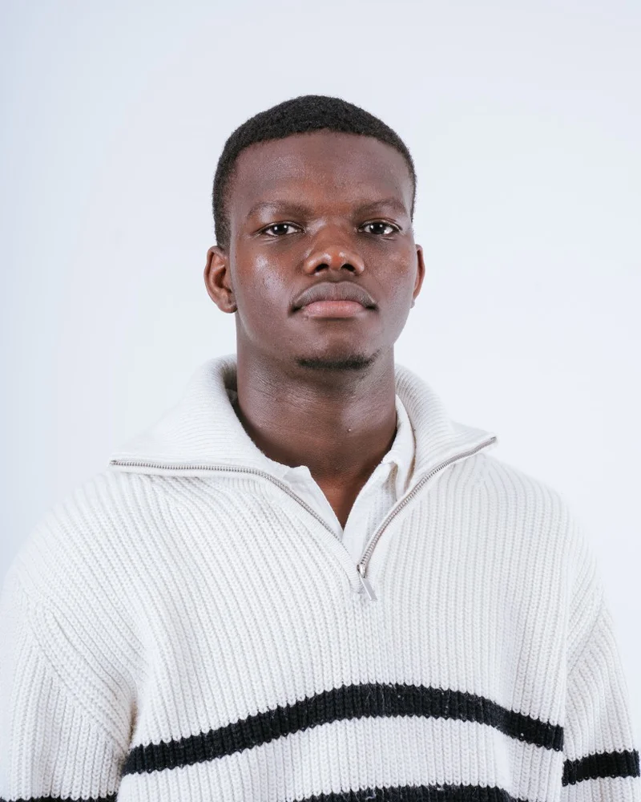
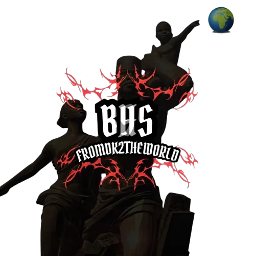
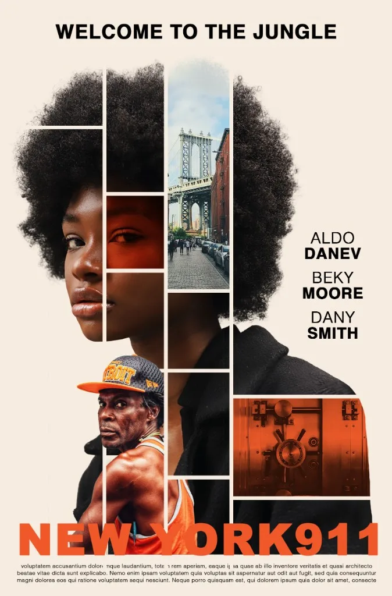

Jetour × Terrou Bi
Prévisualisation 3D d’un événement automobile à Dakar.
Communicant digital entre création, stratégie et data. Je conçois des contenus, des expériences de marque et des projets qui se voient — de Bordeaux à Dakar, en passant par Malte.

3D, vidéo événementielle, branding et direction artistique — sélection de travaux récents.
Prévisualisation 3D d’un événement automobile à Dakar.
Couverture vidéo du partenariat pendant mon stage à Malte.

Identité pour un groupe de rap sénégalais, inspirée de Dakar.

Direction artistique académique : affiche cinématographique multi-outils.
Je suis Mouhamadou Sow, diplômé en Communication Digitale & Internationale à l’Efrei Bordeaux. J’aime autant imaginer une idée visuelle que construire le dispositif qui la fait vivre : contenus, social, événements, branding.
En septembre 2026, je démarre un Master Data Management & IA. Mon objectif : croiser intuition créative et lecture des données pour des stratégies plus justes, plus efficaces, plus mémorables.
Contenus, social media et identité visuelle pour des marques qui veulent exister vraiment.
Une approche plus analytique pour mesurer, optimiser et décider.
Expérience à Malte, parcours entre France et Sénégal, 4 langues au quotidien.
Passion forte pour la musique — je pratique, j’écoute, je crée autour de ça.
Rédaction, création de contenu, identité visuelle, gestion des réseaux sociaux, aisance à l’oral.
Photoshop, Illustrator, CapCut, montage vidéo, web design, direction artistique.
Planification éditoriale, campagnes pub, analyse de performance, prospection, outils IA.
Disponible dès septembre 2026 pour 12 à 24 mois. Écrivons quelque chose qui a du style — et des résultats.